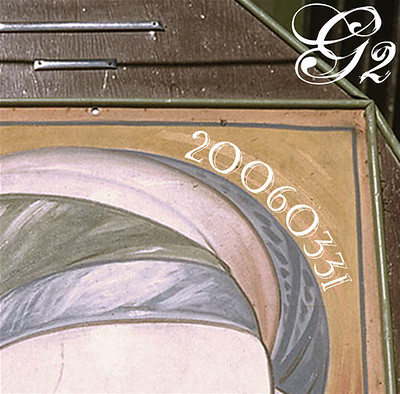
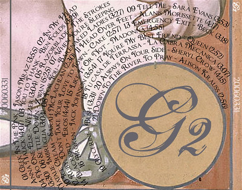

G2 20060331

I really enjoy music. Throughout the dating experience of Maria and I, and continuing into marriage, I have made her CD's which she can listen to. I originally made them as a sort of a souvenir for a specific date, where the disc was the soundtrack for a date, and she got to keep a copy. Yeah, it's a little cheesy, but it worked well enough to get her to marry me. I really only have this here for sharing purposes. You might find a song you like, you might not.
Below, you'll find a copy of all of the songs on the album.
| Track | Title | Artist | Length |
|---|---|---|---|
| 1 | Geek In The Pink | Jason Mraz | 3:55 |
| 2 | In My Head | Anna Nalick | 4:07 |
| 3 | You to Thank (iTunes Originals Version) | Ben Folds | 3:29 |
| 4 | No One Else | Weezer | 3:04 |
| 5 | Razorblade | The Strokes | 3:30 |
| 6 | Settle Down | Zwan | 5:25 |
| 7 | When You're Sleeping | Natalie Imbruglia | 3:04 |
| 8 | For You | Barenaked Ladies | 3:27 |
| 9 | Tell Me | Sara Evans | 3:53 |
| 10 | Ice Cream (iTunes Originals Version) | Sarah McLachlan | 2:30 |
| 11 | Head Over feet (Acoustic) | Alanis Morissette | 4:17 |
| 12 | Ruby, Don't Take Your Love to Town | Cake | 2:57 |
| 13 | Emergency Exit | Beck | 3:18 |
| 14 | Blackbird | Eros | 4:44 |
| 15 | Like It Or Not | Madonna | 4:55 |
| 16 | Broken | Jack Johnson | 3:54 |
| 17 | You're My Best Friend | Queen | 2:52 |
| 18 | Tu casa de Terrassa | La Cabra Mecánica | 3:07 |
| 19 | Glycerine (Live Acoustic) | Bush | 3:31 |
| 20 | Always On Your Side | Sheryl Crow | 4:15 |
| 21 | Down To The River To Pray | Alison Krauss | 2:56 |

Earlier I gave you a link to the cover, and this is the back. I'm really pleased with how this whole CD turned out. Some of you who have actually listened to the songs might say "You gave that song to your wife?!" I'll kindly explain that the CD's are a mix of both songs with meaning, and songs without meaning, which I just happen to enjoy.
This is only the second album that I've done full album artwork for. If you're curious, I'll divulge my secrets about each parts of the design:
- The background on both the front and back are from the library of congress. No, there is no personal meaning in the photo, I just liked the colors and carnival look of the photo. On the back I ended up brushing out the canvas so I could put my own letters in there, hopefully maintaining a similar look.
- The G2 on the front, back, and sides is done with the font Selfish. Nice font to be used sparingly. The back colors were interesting, since I was aiming to have it look somewhat like it was part of the original photo.
- The 20060331 on the front is done with Watson. I really liked the old-ish, carnival look of the font. By putting the words on a path that wrapped around there, it looks nice. Looking back, I should have continued this font wherever I put that title... oh well.
- The last font, which I used extensively on the back was Chocolate Box. Again, I thought it could fit in well, plus I knew I could use it more extensively and it wouldn't get annoying. I managed those rings of the track information by making 12 paths of text and going wild. Rather difficult, and certainly room for improvement, but I'm certainly pleased with it.
{kind=link}
Probably more than any of you really cared about (which is why I didn't email this out to everybody like usual), but I felt like sharing, and this is my website. I always like to make mixes, and it never hurts to share.
- Prior: Candy Organization
- Next: Office Co-Workers